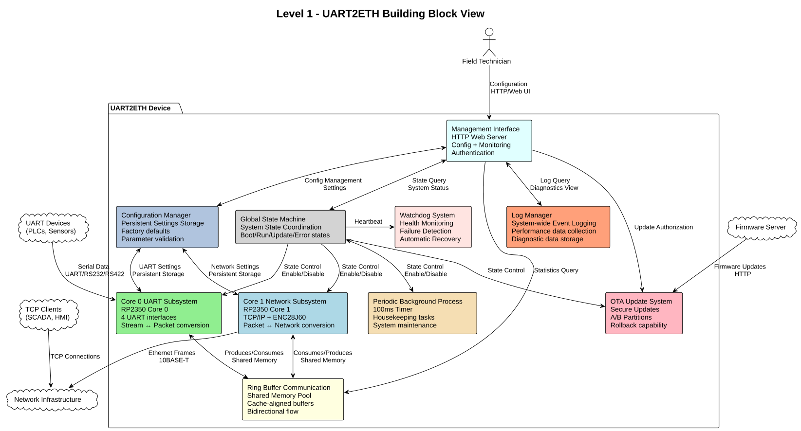
Building Block View
Whitebox Overall System
The UART2ETH system follows a dual-core separation strategy that provides fault isolation while achieving hardware-driven performance. The system is decomposed into ten major building blocks that each handle distinct responsibilities in the UART-to-TCP bridge functionality.
Motivation
The dual-core separation strategy from our solution approach drives this decomposition to achieve:
-
Fault isolation: Each core has distinct responsibilities to prevent cascading failures
-
Performance optimization: Hardware-driven I/O with software control for real-time requirements
-
Industrial reliability: Predictable behavior through static allocation and deterministic interfaces
-
Bidirectional communication: Both UART and TCP interfaces require full-duplex operation
-
System coordination: Global state machine ensures consistent system behavior across cores
-
Comprehensive monitoring: Log Manager with performance data collection provides visibility and diagnostics
-
Configuration persistence: Configuration Manager ensures settings survive power cycles and support factory operations
-
Predictable maintenance: Periodic background processing ensures system housekeeping at regular intervals
-
Automatic recovery: Watchdog system provides fault detection and recovery capabilities
Contained Building Blocks
| Name | Responsibility |
|---|---|
Core 0 UART Subsystem |
Manages all 4 UART interfaces with interrupt/DMA handling. Performs bidirectional stream-to-packet conversion for communication with the ring buffer system. |
Core 1 Network Subsystem |
Implements TCP/IP stack and Ethernet controller interface with interrupt/DMA handling. Integrates lwIP Raw TCP API for socket operations and packet processing. |
TCP Socket Server |
Provides TCP server functionality using lwIP Raw API with line-based protocol. Supports up to 4 concurrent connections on ports 4001-4004 for UART bridging. Implements echo functionality and connection lifecycle management with integration to Core1 timer subsystem. |
Ring Buffer Communication |
Provides bidirectional inter-core data transfer using a shared memory pool with cache-aligned, mutex-protected buffers. Handles dynamic burst allocation by being channel and driection agnostic. |
Management Interface |
Offers web-based configuration, monitoring, and administration through HTTP server with authentication, statistics collection, and configuration UIs. |
OTA Update System |
Manages secure firmware updates with A/B partition management, signature validation, and automatic rollback capabilities. |
Global State Machine |
Coordinates overall system state across both cores through shared main_state (atomic) and per-core sub_states. Implements complex initialization sequences (UART setup, persistence, logging, network), configuration phases (UART config, DHCP), and operational states. Uses event-driven transitions with condition validation, doorbell-based cross-core wakeup, and ISR-safe atomic variables. Provides deterministic state-driven control logic for core main loops. |
Log Manager |
Collects, formats, and stores system-wide events, errors, performance data, and diagnostic information from all components. Provides log rotation, filtering, and integration with management interface for diagnostics. |
Configuration Manager |
Manages persistent storage of all system settings including UART parameters, network configuration, user preferences, and system options. Provides factory defaults, parameter validation, configuration versioning, and backup/restore functionality. |
Periodic Background Process |
Executes system maintenance tasks every 100ms including statistics collection, connection cleanup, buffer maintenance, session management, configuration backup, and system health checks. |
Watchdog System |
Monitors system health through heartbeat signals from all major components. Detects failures, logs recovery events, and triggers automatic system recovery or reset when necessary. |
Core 0 Timer Subsystem |
Provides hardware timer alarm-based timing services for Core0 operations. Manages 8 static timers for UART timeouts, protocol delays, and retransmission timing using RP2350 Timer Alarm 0. |
Core 1 Timer Subsystem |
Provides hardware timer alarm-based timing services for Core1 operations. Manages 16 static timers for network timeouts, DHCP renewal, persistence intervals, and maintenance scheduling using RP2350 Timer Alarm 1. |
Important Interfaces
Ring Buffer Interface
-
Shared Pool Design: Single buffer pool serves both directions dynamically
-
Core 0: Producer (UART RX) + Consumer (UART TX) using shared pool
-
Core 1: Producer (TCP RX) + Consumer (TCP TX) using shared pool
-
Entry Format: Fixed 1088-byte entries (64-byte header + 1024-byte payload)
-
Synchronization: Mutex-protected operations for shared pool access
-
Overflow Policy: Drop-oldest across entire pool (direction-agnostic)
Network Interface
-
External: 10BASE-T Ethernet, RJ45 connector (ENC28J60 limitation)
-
Internal: SPI to ENC28J60 controller, software TCP/IP stack (lwIP)
UART Interface
-
Hardware: 4 independent UART channels with configurable parameters
-
Protocols: UART/RS232/RS422 support with 300-500kBaud range
-
Configuration: Per-channel baud rate, data bits, stop bits, parity settings
Global State Machine Interface
-
Main States: INIT, CONFIGURATION, OPERATIONAL, ERROR - atomic variable with cross-core doorbell wakeup
-
Core0 Sub-States: Complex initialization (INIT_UART, INIT_COMPLETE, INIT_IDLE), configuration (CONFIG_UART, CONFIG_COMPLETE, CONFIG_IDLE), and operational (UART_IDLE, UART_ACTIVE, UART_ERROR) sequences
-
Core1 Sub-States: Multi-stage initialization (INIT_PERSISTENCE, INIT_LOGGING, INIT_NET, INIT_WAIT_FOR_LINK), DHCP configuration (CONFIG_NET_WAIT_FOR_DHCP, CONFIG_NET_CHECK_DHCP), and operational network/maintenance states
-
Event-Driven Transitions: All state changes via event processing with condition validation - no direct state setting
-
Cross-Core Synchronization: RP2350 multicore doorbells wake other core on main state changes
-
ISR-Safe Operations: Atomic variables for sub-states ensure interrupt compatibility
Logging Interface
-
Log Levels: DEBUG, INFO, WARN, ERROR, CRITICAL with configurable filtering
-
Storage: Circular buffer in RAM with optional flash persistence
-
Format: Structured logging with timestamps, component ID, and severity
-
Performance Data: Throughput metrics, latency measurements, resource utilization
-
Access: Real-time log streaming via management interface
Configuration Manager Interface
-
Storage: Persistent flash storage with wear leveling and redundancy
-
Settings Categories: UART parameters, network config, user accounts, system options
-
Validation: Parameter range checking, conflict detection, dependency validation
-
Factory Reset: Restore to known-good defaults with version migration
-
Backup/Restore: Configuration export/import for deployment and recovery
Periodic Process Interface
-
Timer: Hardware timer interrupt every 100ms (10Hz frequency)
-
Task Queue: Priority-based maintenance task scheduling
-
Execution: Non-blocking operations with bounded execution time
-
Health Reports: Regular status updates to watchdog system
Watchdog Interface
-
Heartbeat: Component-specific periodic health signals
-
Thresholds: Configurable timeout values per monitored component
-
Recovery Actions: Graduated response from warnings to system reset
-
Hardware Integration: RP2350 hardware watchdog timer as final safety net
Timer Subsystem Interface
-
Per-Core Independence: Core0 uses Timer Alarm 0, Core1 uses Timer Alarm 1 with no cross-core coordination
-
Static Allocation: Core0 manages 8 timers, Core1 manages 16 timers using fixed-size arrays
-
Hardware Precision: Microsecond-accurate timing through RP2350 hardware timer alarms
-
API Pattern:
coreX_timer_set(timer_id, interval_ms),coreX_timer_is_expired(timer_id) -
Interrupt Driven: Each core handles its own timer alarm interrupts independently
-
Power Efficient: Hardware alarms scheduled only for next expiration time, CPU can sleep between events
Level 2
Whitebox Core 0 UART Subsystem
The Core 0 UART Subsystem specializes in handling all UART communication with dedicated hardware management, interrupt processing, and bidirectional data conversion between stream and packet formats.
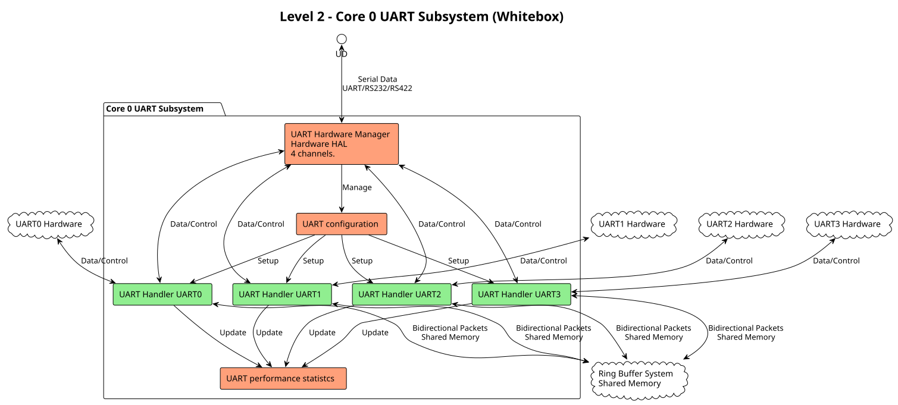
Motivation
Core 0 specialization enables real-time UART processing without interference from network operations. The bidirectional packet conversion allows seamless translation between continuous UART streams and discrete network packets.
Contained Building Blocks
| Name | Responsibility |
|---|---|
UART Hardware Manager |
Direct control of 4 UART channels with configurable parameters (baud rate, data bits, parity). Manages hardware registers and status monitoring. |
Interrupt Handler |
Processes time-critical UART events (RX data available, TX buffer empty) with minimal latency for real-time performance. |
DMA Controller |
Optimizes bulk data transfers in both directions to reduce CPU load and improve throughput for high-baud applications. |
Packet Assembler |
Converts incoming UART streams into fixed-size packets for ring buffer storage. Handles framing and timestamp metadata. |
Packet Disassembler |
Extracts UART data from ring buffer packets and converts back to continuous streams for transmission. |
Ring Buffer Interface |
Provides producer operations (UART RX data) and consumer operations (UART TX data) with proper synchronization. |
Whitebox Core 1 Network Subsystem
The Core 1 Network Subsystem implements complete TCP/IP networking with lwIP stack, DHCP client, sophisticated state management, and interrupt-driven packet processing. Integrates with Core1 timers for DHCP timeout handling and network operations.
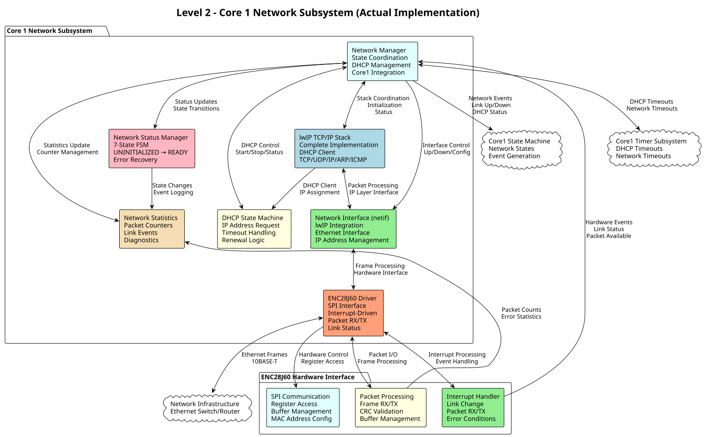
Motivation
The actual implementation provides complete TCP/IP networking with automatic IP address assignment through DHCP, sophisticated state management for reliable network operation, and integration with Core1 timing and state machine systems for coordinated dual-core operation.
Contained Building Blocks
| Name | Responsibility |
|---|---|
Network Manager |
Coordinates all network operations with 7-state FSM (UNINITIALIZED, INITIALIZING, LINK_DOWN, LINK_UP, DHCP_REQUESTING, READY, ERROR). Integrates with Core1 timers for DHCP timeouts and state machine for network events. |
lwIP TCP/IP Stack |
Complete software TCP/IP implementation with DHCP client, providing full network protocol suite (TCP, UDP, IP, ARP, ICMP, DHCP). Integrated with custom network interface for ENC28J60. |
ENC28J60 Driver |
Sophisticated SPI driver with interrupt handling, link status monitoring, packet transmission/reception, MAC address configuration, and comprehensive error handling and statistics. |
Network Interface (netif) |
lwIP integration layer providing Ethernet interface abstraction. Handles IP address management, interface up/down control, and packet processing between lwIP stack and ENC28J60 hardware. |
DHCP State Machine |
Automatic IP address acquisition with timeout handling (30s default), DHCP request/renewal logic, and integration with Core1 timers for timeout management. |
Network Status Manager |
7-state finite state machine managing network lifecycle: initialization → link detection → DHCP → operational. Provides error recovery and status reporting to Core1 state machine. |
Network Statistics |
Comprehensive statistics collection including packet counters, link up/down events, DHCP requests, error conditions, and diagnostic information for monitoring and troubleshooting. |
Network Manager State Machine
Network States:
typedef enum {
NETWORK_STATUS_UNINITIALIZED, // Not initialized
NETWORK_STATUS_INITIALIZING, // Hardware initialization in progress
NETWORK_STATUS_LINK_DOWN, // Physical link down
NETWORK_STATUS_LINK_UP, // Physical link up, no IP
NETWORK_STATUS_DHCP_REQUESTING, // DHCP requesting IP address
NETWORK_STATUS_READY, // Network ready for TCP/IP
NETWORK_STATUS_ERROR // Error state
} network_status_t;State Transitions:
- UNINITIALIZED → INITIALIZING (driver init)
- INITIALIZING → LINK_DOWN/LINK_UP (hardware ready)
- LINK_UP → DHCP_REQUESTING (DHCP enabled)
- DHCP_REQUESTING → READY (IP assigned) / LINK_DOWN (link lost)
- READY → LINK_DOWN (link lost)
- Any state → ERROR (hardware failure)
Core1 Integration
Timer Integration:
- CORE1_TIMER_DHCP_DISCOVER: DHCP timeout handling (30s default)
- CORE1_TIMER_NETWORK_TIMEOUT: lwIP timeout processing
State Machine Integration:
- Generates CORE1_EVENT_NETWORK_* events for Core1 state machine
- Link up/down detection drives state machine transitions
- DHCP completion triggers configuration phase completion
Main Loop Integration:
// Core1 main loop network processing
void core1_main(void) {
while (true) {
// High priority: packet processing
if (network_manager_receive_packets_pending()) {
network_manager_process();
}
// Medium priority: link changes
if (network_manager_link_change_pending()) {
network_manager_link_change();
}
// Low priority: timeout processing
if (core1_timer_is_expired(CORE1_TIMER_NETWORK_TIMEOUT)) {
network_manager_check_timeouts();
}
}
}Whitebox Ring Buffer Communication System
The Ring Buffer Communication System provides the critical inter-core communication mechanism using a shared memory pool that dynamically handles bursts from either direction while maintaining deterministic behavior.
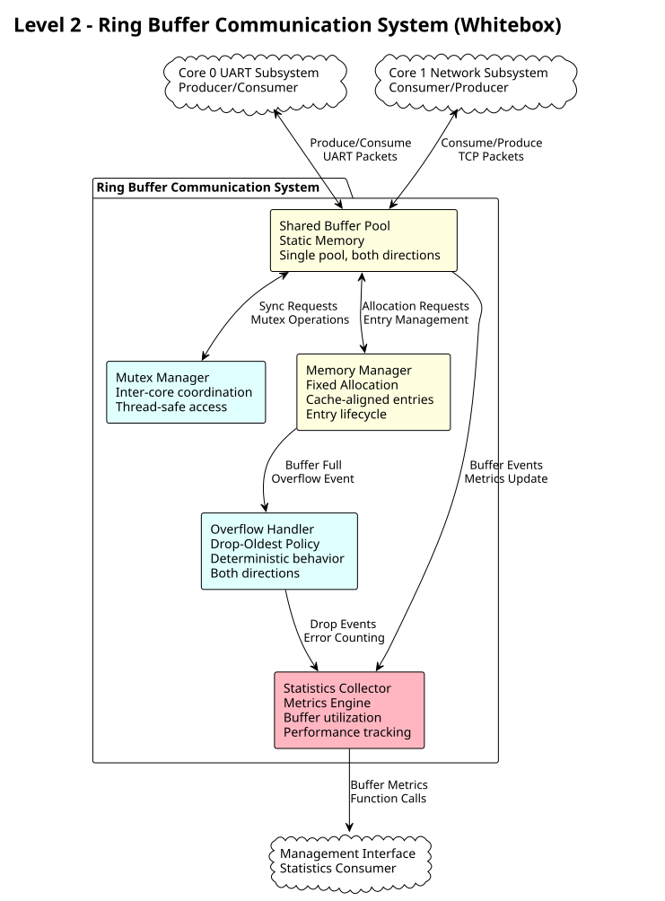
Motivation
The shared buffer pool design provides elegant burst handling by allowing dynamic allocation to whichever direction needs capacity. This approach is more efficient than fixed per-direction pools and gracefully handles real-world traffic patterns.
Contained Building Blocks
| Name | Responsibility |
|---|---|
Shared Buffer Pool |
Single memory pool that dynamically serves both UART→TCP and TCP→UART directions with fixed-size entries. |
Mutex Manager |
Provides thread-safe access to the shared pool using FreeRTOS mutexes and semaphores for inter-core synchronization. |
Memory Manager |
Handles allocation and deallocation of fixed-size buffer entries with cache-aligned addressing for optimal performance. |
Overflow Handler |
Implements drop-oldest policy when buffer reaches capacity, ensuring deterministic behavior under overload conditions. |
Statistics Collector |
Tracks buffer utilization, message counts, throughput metrics, and error conditions for monitoring and diagnostics. |
Whitebox Log Manager
The Log Manager provides system-wide event logging through fixed-size entries with enumerated event types. This design eliminates variable-length message parsing complexity while providing efficient, predictable memory usage for embedded systems.
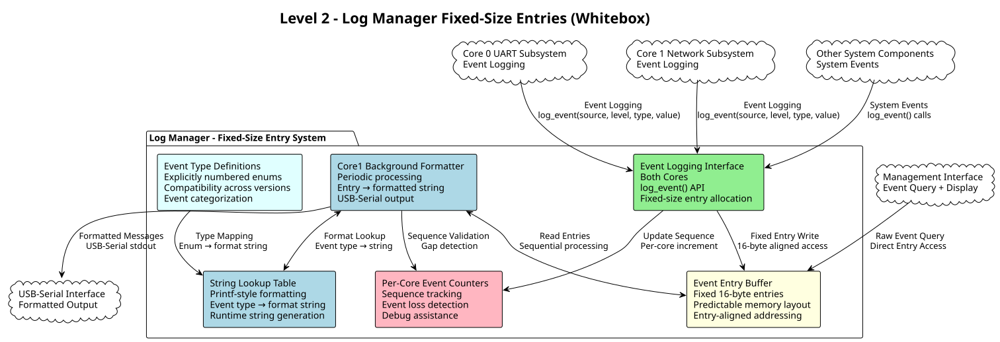
Motivation
Fixed-size log entries provide predictable memory usage and eliminate complex message parsing overhead. Enumerated event types enable efficient storage while maintaining human-readable output through string lookup tables. Per-core event numbering enables detection of lost events during system debugging.
Contained Building Blocks
| Name | Responsibility |
|---|---|
Event Logging Interface |
Provides thread-safe event logging API using fixed-size entry allocation. Single function: log_event(event_source, log_level, event_type, extra_value) for all system components. |
Event Entry Buffer |
Manages circular buffer of fixed 16-byte log entries with predictable memory layout. Entry count-based addressing eliminates variable-length parsing complexity. |
Event Type Definitions |
Maintains explicitly numbered enumeration of all system events for cross-version compatibility. Categories include SYSTEM, UART, NETWORK, CONFIG, and OTA events. |
String Lookup Table |
Maps event types to printf-style format strings for human-readable output generation. Supports parameterized messages using event_extra_value field. |
Core1 Background Formatter |
Periodic timer task (100ms) that processes pending log entries, generates formatted output strings using lookup table, and outputs to USB-serial interface. |
Per-Core Event Counters |
Maintains separate event sequence numbers for each core to enable detection of lost events during debugging. Global sequence tracking across all event sources. |
Important Interfaces
Event Logging API
-
Single Function Interface:
log_event(event_source, log_level, event_type, extra_value) -
Fixed Entry Size: All log entries exactly 16 bytes for predictable memory usage
-
Thread Safety: Atomic entry allocation with per-core sequence numbering
-
Overflow Policy: Drop oldest entries when buffer is full, log overflow events
Log Entry Structure
-
Entry Size: 16 bytes total (32-bit aligned for optimal access)
-
Fields: timestamp (uint32_t), event_source (uint16_t), event_number (uint16_t), log_level (uint16_t), event_type (uint16_t), event_extra_value (uint32_t)
-
Buffer Sizing: Buffer size specified in number of entries, not bytes
-
Memory Layout: n × sizeof(log_entry_t) allocation ensures entry alignment
Event Type System
-
Explicit Numbering: All event types explicitly numbered for version compatibility
-
Event Sources: SYSTEM, UART0-3, NETWORK, CONFIG, OTA, WATCHDOG categories
-
Log Levels: DEBUG, INFO, WARN, ERROR levels maintained for filtering
-
Example Events: UART_INIT=100, TCP_CONNECT=200, CONFIG_CHANGED=300
String Formatting System
-
Lookup Table: Event type enum maps to printf-style format strings
-
Parameter Support: Single uint32_t parameter per event via event_extra_value
-
Format Examples: [UART_INIT] = "UART channel %u initialized", [TCP_CONNECT] = "TCP connection on port %u"
-
Runtime Generation: Formatted strings generated only during output processing
Core1 Background Processing
-
Timer Frequency: 100ms periodic task execution
-
Entry Processing: Sequential processing of fixed-size entries from buffer
-
String Generation: Runtime formatting using lookup table and event parameters
-
USB-Serial Output: Formatted strings output to stdout for debugging
Whitebox Configuration Manager
The Configuration Manager provides centralized storage and access control for all system settings using shared SRAM structures with core-specific access permissions and SHA256 integrity verification.
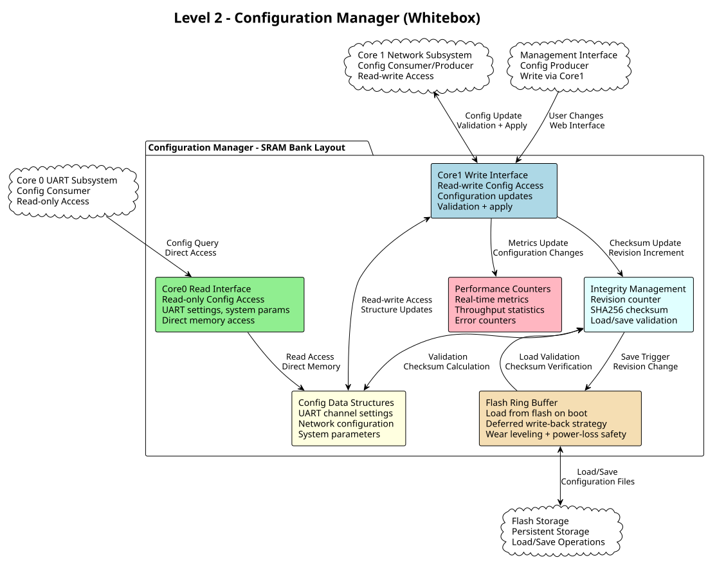
Motivation
Shared SRAM configuration provides fast access for real-time Core0 operations while allowing Core1 to manage updates and persistence. SHA256 integrity checking ensures configuration corruption detection during flash load operations.
Contained Building Blocks
| Name | Responsibility |
|---|---|
Core0 Read Interface |
Provides read-only access to configuration structures for Core0 components. Direct memory access without locking for maximum UART processing performance. |
Core1 Write Interface |
Handles configuration updates with validation, applying changes atomically, and triggering persistence operations. Manages user configuration changes from management interface. |
Config Data Structures |
Organized configuration storage including UART channel settings, network parameters, system options, and operational parameters in structured memory layout. |
Performance Counters |
Real-time operational metrics including throughput statistics, error counters, and system utilization data accessible to both cores and management interface. |
Integrity Management |
Maintains revision counter and SHA256 checksum for configuration validation. Detects corruption during flash load operations and triggers recovery procedures. |
Flash Ring Buffer Persistence |
Manages configuration save/load operations using 4-page flash ring buffer for wear leveling and power-loss safety. Implements deferred write-back with SHA256 integrity verification and atomic page updates. |
Important Interfaces
Core0 Configuration Access
-
Read-only Access: Direct memory access to configuration structures without locking
-
Fast Access: Optimized for real-time UART processing requirements
-
Structure Layout: Cache-aligned configuration structures for optimal performance
-
No Blocking: Configuration reads never block Core0 operations
Configuration Data Format
-
UART Settings: Per-channel baud rate, frame format, protocol filter settings
-
Network Config: IP address, port mappings, security parameters, connection limits
-
System Settings: Logging levels, watchdog timeouts, update settings
-
User Preferences: Web interface settings, display options, alert preferences
Flash Ring Buffer Management
-
4-Page Ring Buffer: Circular buffer of flash pages for wear leveling
-
Revision Counter: Incremented on each write, used for startup page selection
-
SHA256 Checksum: Per-page integrity verification during startup recovery
-
Startup Recovery: Load all pages, select highest revision + valid checksum
-
Deferred Writes: Core1 write-back limited to maximum once per 30 seconds
-
Atomic Operations: Complete shared memory written per page for consistency
Whitebox Management Interface
The Management Interface provides comprehensive web-based administration through modular components handling authentication, configuration, and monitoring functions.
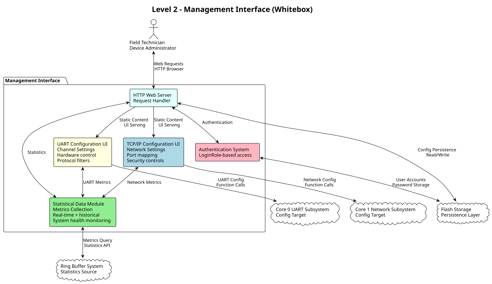
Motivation
The modular management interface design separates concerns between web serving, authentication, data collection, and configuration UIs. This enables independent development and testing of each component while providing a comprehensive administration solution.
Contained Building Blocks
| Name | Responsibility |
|---|---|
HTTP Web Server |
Processes HTTP/1.1 requests, serves static content (HTML/CSS/JS), provides REST API endpoints, and manages user sessions. |
Authentication System |
Handles user login validation, JWT session token management, role-based access control, and security header implementation. |
Statistical Data Module |
Collects real-time metrics from system components, maintains historical data, tracks performance counters, and monitors system health. |
UART Configuration UI |
Provides web interface for configuring UART channel settings, hardware control options, protocol filters, and parameter validation. |
TCP/IP Configuration UI |
Offers web interface for network settings, TCP port mapping, connection limits, and security configurations. |
Whitebox Core 0 Timer Subsystem
The Core 0 Timer Subsystem provides hardware timer alarm-based timing services for UART and protocol operations. Uses RP2350 Timer Alarm 0 for independent, interrupt-driven timer management with no cross-core coordination.
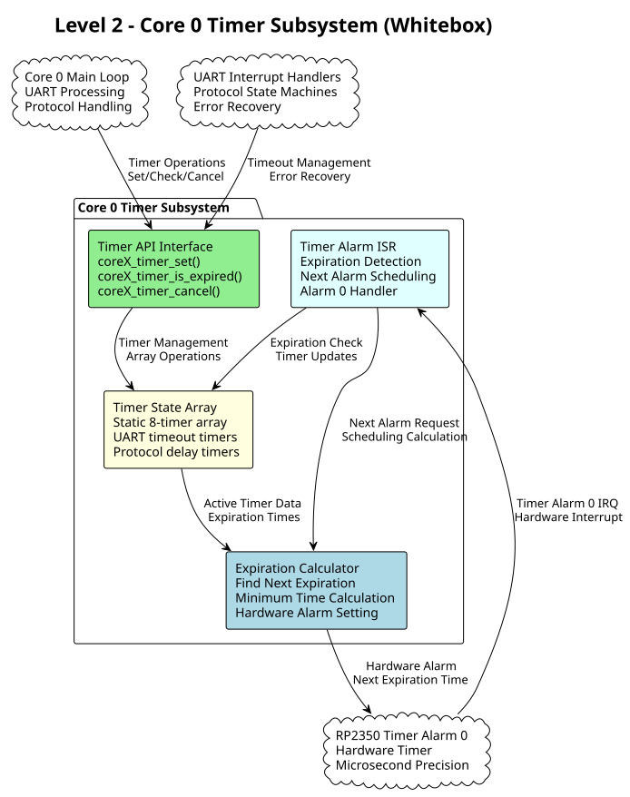
Motivation
Core 0 requires precise timing for UART operations including transmission timeouts, protocol delays, retransmission timing, and error recovery. Hardware timer alarm provides microsecond accuracy with minimal CPU overhead while maintaining independence from Core 1 operations.
Contained Building Blocks
| Name | Responsibility |
|---|---|
Timer API Interface |
Provides thread-safe timer operations for Core 0 components. Implements set, check expiration, and cancel operations for all Core 0 timer IDs. |
Timer State Array |
Manages static array of 8 timers optimized for UART and protocol operations. Tracks timer intervals, expiration times, and active/expired status. |
Timer Alarm ISR |
Handles RP2350 Timer Alarm 0 interrupts. Scans timer array for expired timers, marks expiration flags, and schedules next hardware alarm. |
Expiration Calculator |
Finds minimum expiration time among active timers and programs hardware Timer Alarm 0 for next required interrupt. Optimizes power consumption by avoiding unnecessary interrupts. |
Whitebox Core 1 Timer Subsystem
The Core 1 Timer Subsystem provides hardware timer alarm-based timing services for network and maintenance operations. Uses RP2350 Timer Alarm 1 for independent, interrupt-driven timer management supporting larger timer arrays for diverse network operations.
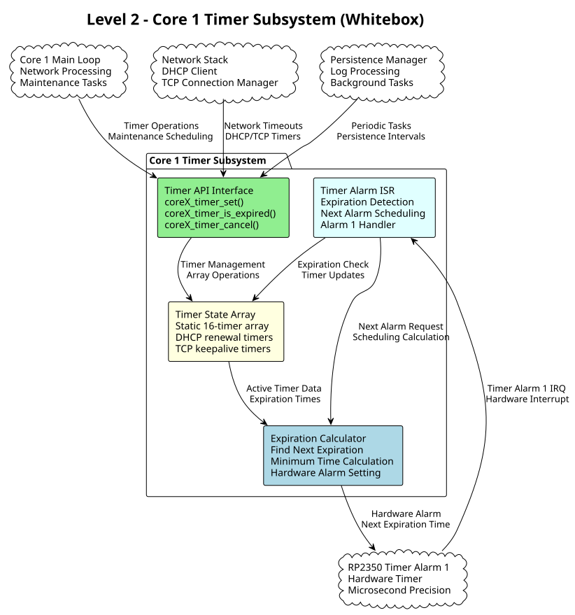
Motivation
Core 1 manages diverse network and maintenance operations requiring various timing intervals from DHCP renewal (hours) to TCP keepalive (seconds) to maintenance cycles (minutes). Larger timer array accommodates multiple concurrent network connections and background processes.
Contained Building Blocks
| Name | Responsibility |
|---|---|
Timer API Interface |
Provides thread-safe timer operations for Core 1 components. Implements set, check expiration, and cancel operations for all Core 1 timer IDs including network and maintenance timers. |
Timer State Array |
Manages static array of 16 timers optimized for network and maintenance operations. Supports DHCP timers, TCP connection timers, persistence intervals, and background task scheduling. |
Timer Alarm ISR |
Handles RP2350 Timer Alarm 1 interrupts. Scans timer array for expired timers, marks expiration flags, and schedules next hardware alarm independently from Core 0. |
Expiration Calculator |
Finds minimum expiration time among active timers and programs hardware Timer Alarm 1 for next required interrupt. Handles varied timing scales from seconds to hours efficiently. |
Whitebox Global State Machine
The Global State Machine provides event-driven coordination between cores through three independent state machines with atomic main state and ISR-safe sub-states.
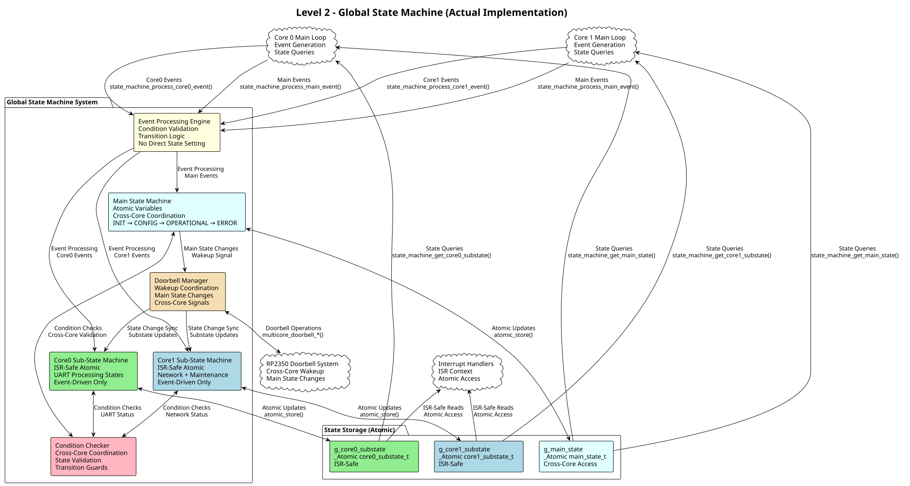
Motivation
The actual implementation uses sophisticated event-driven state machines with complex initialization and configuration sequences. Cross-core coordination through atomic variables and doorbell wakeup ensures deterministic behavior without blocking operations.
Contained Building Blocks
| Name | Responsibility |
|---|---|
Main State Machine |
Coordinates system-wide phases: INIT (hardware setup), CONFIGURATION (UART + DHCP), OPERATIONAL (normal operation), ERROR (recovery). Uses atomic variables and doorbell wakeup for cross-core synchronization. |
Core0 Sub-State Machine |
Manages UART-specific states: initialization sequence (INIT_UART → INIT_COMPLETE → INIT_IDLE), configuration sequence (CONFIG_UART → CONFIG_COMPLETE → CONFIG_IDLE), operational states (UART_IDLE ↔ UART_ACTIVE, error handling). |
Core1 Sub-State Machine |
Handles network and maintenance: complex initialization (INIT_PERSISTENCE → INIT_LOGGING → INIT_NET → INIT_WAIT_FOR_LINK), DHCP configuration (CONFIG_NET_WAIT_FOR_DHCP ↔ CONFIG_NET_CHECK_DHCP), operational network/log/persistence states. |
Event Processing Engine |
Processes all state machine events through validation pattern: current_state + event + check_condition() → new_state. Prevents invalid transitions and ensures only valid state changes occur. |
Condition Checker |
Validates transition conditions including cross-core coordination checks (e.g., check_core0_initialization_complete(), check_core1_configuration_complete()) and hardware status validation. |
Doorbell Manager |
Manages RP2350 multicore doorbells for efficient cross-core wakeup when main state changes. Eliminates polling and provides immediate notification of state transitions. |
State Machine Implementation Details
Initialization Sequence (Complex Multi-Stage)
// Core0 initialization: CORE0_INIT_UART → CORE0_INIT_COMPLETE → CORE0_INIT_IDLE
// Core1 initialization: CORE1_INIT_PERSISTENCE → CORE1_INIT_LOGGING →
// CORE1_INIT_NET → CORE1_INIT_WAIT_FOR_LINK →
// CORE1_INIT_COMPLETE → CORE1_INIT_IDLE
// Condition: Both cores must reach IDLE before main state transitions to CONFIGURATIONConfiguration Sequence (UART + DHCP)
// Core0 config: CORE0_CONFIG_UART → CORE0_CONFIG_COMPLETE → CORE0_CONFIG_IDLE
// Core1 config: CORE1_CONFIG_NET → CORE1_CONFIG_NET_WAIT_FOR_DHCP ↔
// CORE1_CONFIG_NET_CHECK_DHCP → CORE1_CONFIG_COMPLETE → CORE1_CONFIG_IDLE
// Condition: Both cores must complete configuration before main state transitions to OPERATIONALCross-Core Coordination Example
static bool check_core0_initialization_complete(void) {
return atomic_load(&g_initialized) &&
atomic_load(&g_main_state) == MAIN_STATE_INIT &&
(atomic_load(&g_core1_substate) == CORE1_INIT_IDLE) &&
(atomic_load(&g_core0_substate) == CORE0_INIT_COMPLETE ||
atomic_load(&g_core0_substate) == CORE0_INIT_IDLE);
}Event-Driven Interface
// State queries (non-blocking, atomic reads)
main_state_t state_machine_get_main_state(void);
core0_substate_t state_machine_get_core0_substate(void);
core1_substate_t state_machine_get_core1_substate(void);
// Event processing (ONLY way to change states)
bool state_machine_process_main_event(main_state_event_t event);
bool state_machine_process_core0_event(core0_event_t event);
bool state_machine_process_core1_event(core1_event_t event);Level 3
Whitebox Core 0 UART Handler Subsystem
The Core 0 UART Subsystem specializes in handling all UART communication with dedicated hardware management, interrupt processing, and bidirectional data conversion between stream and packet formats.
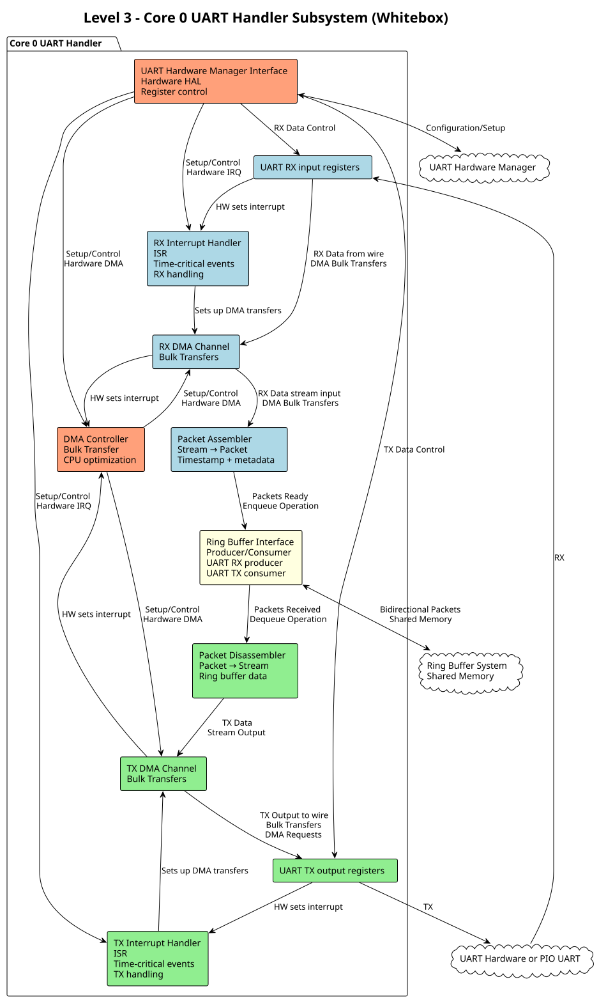
Motivation
UART processing utilizing UART specific ISR and DMA transfers for maximum troughput.
Contained Building Blocks
| Name | Responsibility |
|---|---|
UART Hardware Manager |
Direct control of 4 UART channels with configurable parameters (baud rate, data bits, parity). Manages hardware registers and status monitoring. |
Interrupt Handler |
Processes time-critical UART events (RX data available, TX buffer empty) with minimal latency for real-time performance. |
DMA Controller |
Controls bulk data transfers in both directions |
DMA Channel |
Optimizes bulk data transfers in both directions to reduce CPU load and improve throughput for high-baud applications. |
Packet Assembler |
Converts incoming UART streams into fixed-size packets for ring buffer storage. Handles framing and timestamp metadata. |
Packet Disassembler |
Extracts UART data from ring buffer packets and converts back to continuous streams for transmission. |
Ring Buffer Interface |
Provides producer operations (UART RX data) and consumer operations (UART TX data) with proper synchronization. |
Whitebox Ring Buffer System Internal Structure
The Ring Buffer System provides the foundational inter-core communication with detailed memory management, helper functions, and synchronization primitives.
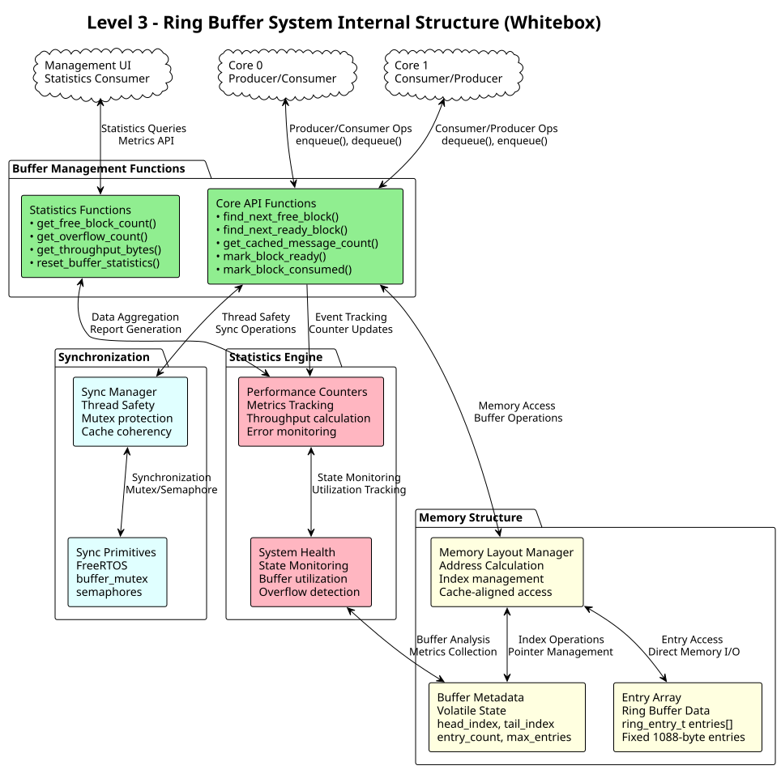
Purpose
Provides efficient, thread-safe, bidirectional communication between cores with deterministic behavior and comprehensive monitoring capabilities.
Internal Structure
Memory Layout Manager
Manages the physical organization of the ring buffer in memory with cache-aligned addressing and efficient index calculations.
-
Ring Buffer Array: Contiguous memory block with cache-aligned entries
-
Index Management: Head/tail pointers with wrap-around logic
-
Memory Addressing: Base address + (index × entry_size) calculations
Buffer Management Functions
Core API providing the helper functions for ring buffer operations and monitoring.
// Core buffer operations
ring_entry_t* find_next_free_block(void);
ring_entry_t* find_next_ready_block(uint8_t uart_channel, uint8_t direction);
bool is_buffer_full(void);
bool is_buffer_empty(void);
// Statistics and monitoring
uint32_t get_cached_message_count(void);
uint32_t get_cached_message_count_by_channel(uint8_t uart_channel);
uint32_t get_cached_message_count_by_direction(uint8_t direction);
uint32_t get_free_block_count(void);
uint32_t get_overflow_count(void); // Dropped messages
uint32_t get_total_throughput_bytes(void);
// Advanced operations
ring_entry_t* peek_next_block(uint8_t uart_channel, uint8_t direction);
void mark_block_ready(ring_entry_t* entry);
void mark_block_consumed(ring_entry_t* entry);
void reset_buffer_statistics(void);Memory Layout Structure
Complete ring buffer system data structure with metadata, statistics, and synchronization primitives.
typedef struct {
// Ring buffer metadata (cache-aligned)
volatile uint32_t head_index; // Producer index
volatile uint32_t tail_index; // Consumer index
volatile uint32_t entry_count; // Current entries
uint32_t max_entries; // Buffer capacity
// Statistics (cache-aligned)
uint32_t total_produced;
uint32_t total_consumed;
uint32_t overflow_count;
uint32_t underflow_count;
// Synchronization
mutex_t buffer_mutex;
semaphore_t free_space_sem;
semaphore_t data_ready_sem;
// Entry array (cache-aligned)
ring_entry_t entries[];
} ring_buffer_system_t;Data Entry Format
Individual ring buffer entry structure used for both communication directions.
typedef struct {
// Management Data (16 bytes)
uint8_t uart_channel; // 0-3
uint8_t direction; // RX_UART_TO_TCP / RX_TCP_TO_UART
uint8_t status; // FILLING/DRAINING/FULL/EMPTY
uint8_t payload_length; // Actual data length
uint32_t timestamp; // Fill timestamp
uint32_t sequence_id; // For ordering/debugging
uint32_t next_in_use; // Packets in use (within ring buffer) are a single linked list
uint32_t reserved; // Future use/alignment
// Payload Data (1024 bytes max)
uint8_t payload[1024]; // Fixed max size for worst case
} ring_entry_t;Whitebox UART Hardware Manager Internal Structure
The UART Hardware Manager provides unified control over all 4 UART channels with individual controllers, parameter management, and comprehensive status monitoring.
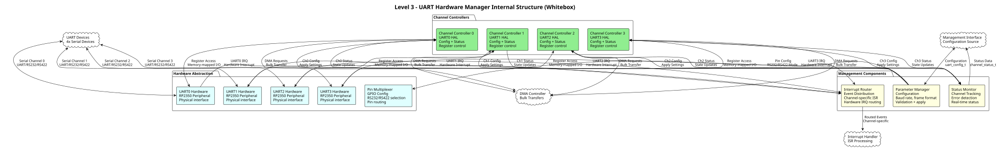
Purpose
Provides unified interface to all 4 UART channels with configurable parameters, comprehensive status monitoring, and efficient interrupt handling.
Internal Structure
UART Configuration Interface
Complete configuration structure for UART channel parameters.
typedef struct {
uint32_t baud_rate; // 300-500000 bps
uint8_t data_bits; // 5-8 bits
uint8_t stop_bits; // 1-2 bits
uint8_t parity; // NONE/ODD/EVEN
bool flow_control; // Hardware flow control
bool rs485_mode; // RS485 half-duplex mode
} uart_config_t;UART Operations API
Core function interface for UART channel operations.
// Channel operations
int uart_channel_configure(uint8_t channel, uart_config_t* config);
int uart_channel_read(uint8_t channel, uint8_t* buffer, size_t length);
int uart_channel_write(uint8_t channel, const uint8_t* data, size_t length);
bool uart_channel_is_ready(uint8_t channel);
uint32_t uart_channel_get_status(uint8_t channel);Status Monitoring Structure
Comprehensive status tracking for each UART channel.
typedef struct {
bool carrier_detect;
bool clear_to_send;
bool data_set_ready;
uint32_t rx_errors;
uint32_t tx_errors;
uint32_t frames_received;
uint32_t frames_transmitted;
} uart_channel_status_t;Whitebox Flash Persistence System
The Flash Persistence System provides reliable storage and recovery of the complete shared memory structure using a flash ring buffer approach that ensures wear leveling and power-loss safety for embedded systems.
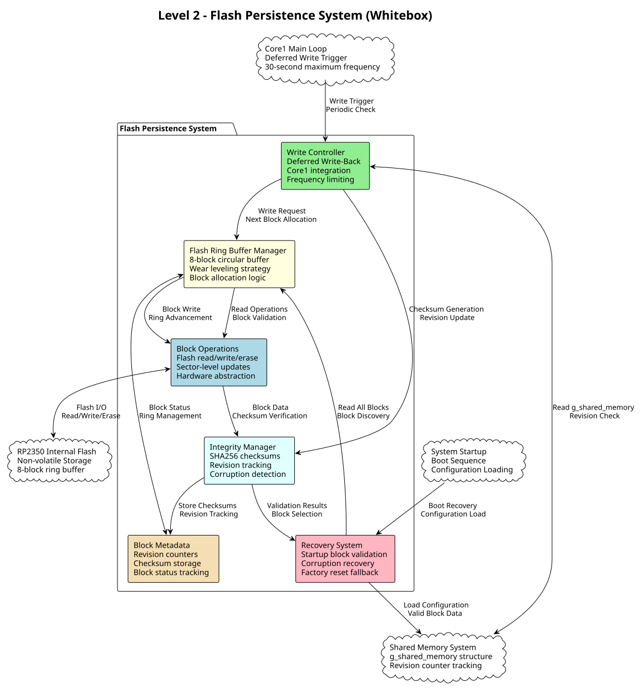
Motivation
Flash persistence ensures configuration survival across power cycles while preventing flash wear-out and corruption. The ring buffer approach provides automatic wear leveling and power-loss safety without complex file systems.
Contained Building Blocks
| Name | Responsibility |
|---|---|
Write Controller |
Manages deferred write-back strategy with Core1 integration. Limits write frequency to maximum once per 30 seconds and only writes when shared memory revision counter changes. |
Flash Ring Buffer Manager |
Implements 4-page circular buffer for wear leveling. Tracks current write position, manages page allocation sequence, and maintains ring buffer state across power cycles. |
Integrity Manager |
Handles SHA256 checksum generation and verification for each flash page. Maintains revision counters for startup page selection and detects data corruption. |
Page Operations |
Provides hardware abstraction layer for RP2350 flash operations. Implements atomic page write/erase operations and manages flash sector alignment requirements. |
Recovery System |
Handles startup configuration loading by validating all ring buffer pages. Selects page with highest revision and valid checksum, implements factory reset fallback for total corruption. |
Page Metadata |
Manages per-page metadata including revision counters, SHA256 checksums, and page status flags. Provides efficient page validation and selection during recovery. |
Important Interfaces
Flash Page Structure
-
Page Size: Aligned to RP2350 flash sector size (4096 bytes)
-
Data Section: Complete
g_shared_memorystructure (raw binary) -
Metadata Section: Revision counter (32-bit) + SHA256 checksum (256-bit)
-
Magic Number: Page validity marker for ring buffer management
Write-Back Interface
-
Trigger Condition:
g_shared_memory.revision_counterincrement detection -
Frequency Limit: Maximum once per 30 seconds via Core1 timer
-
Atomic Operation: Complete shared memory + metadata written per page
-
Ring Advancement: Automatic progression to next page in 4-page ring
Recovery Interface
-
Page Scanning: Read all 4 ring buffer pages during startup
-
Validation Logic: SHA256 verification + magic number check per page
-
Selection Criteria: Highest revision counter among valid pages
-
Fallback Strategy: Factory defaults if no valid pages found
Flash Ring Buffer Layout
// Flash page structure (4096 bytes aligned)
typedef struct {
uint32_t magic_number; // 0xC0FFEEAA - page validity
uint32_t revision_counter; // Incremented on each write
uint8_t sha256_checksum[32]; // Integrity verification
uint32_t reserved[4]; // Future use
// Complete shared memory structure (raw binary)
shared_memory_layout_t shared_memory_data;
// Padding to flash sector boundary
uint8_t padding[...];
} __attribute__((packed, aligned(4096))) flash_page_t;
// Ring buffer management
typedef struct {
uint8_t current_write_page; // 0-3, next page to write
uint8_t last_valid_page; // 0-3, last successfully read page
uint32_t total_writes; // Lifetime write counter
uint32_t corruption_count; // Detected corruption events
} ring_buffer_state_t;Flash Persistence Implementation
The flash persistence system is implemented using Path 2: Extension of Existing Shared Memory Framework approach as decided in the technical requirements. This provides seamless integration with the current shared memory layout while maintaining architectural simplicity.
Implementation Architecture
Core Implementation Components:
-
RP2350 Bootrom Integration: Uses
get_partition_table_info()and partition bootrom APIs to locate partition ID=2 -
Hardware SHA256: Leverages pico-sdk’s hardware crypto for fast integrity verification
-
Core1 Main Loop Integration: Persistence checking as lowest priority task with 30-second intervals
-
Real Flash Testing: All development and testing performed on actual RP2350 flash hardware
Implementation Strategy
Flash Operations Layer:
// Flash operations using RP2350 bootrom APIs
typedef struct {
uint32_t partition_base_offset; // Partition ID=2 flash offset
uint32_t partition_size; // 512KB partition size
uint32_t page_size; // 4096 bytes per page
bool partition_valid; // Partition table loaded successfully
} flash_partition_info_t;
// Ring buffer state tracking (static variables in persistence module)
typedef struct {
uint8_t current_write_page; // 0-3, next page to write
uint8_t last_written_page; // 0-3, last successfully written page
uint32_t last_written_revision; // Last revision_counter written to flash
uint32_t total_writes; // Lifetime write counter
uint32_t corruption_count; // Detected corruption events
absolute_time_t last_write_time; // Timestamp of last write for 30-second interval
} flash_ring_state_t;Core1 Integration Pattern:
// Core1 main function structure
void core1_main(void) {
// Initialize Core1 subsystems
log_event(EVENT_SOURCE_SYSTEM, LOG_LEVEL_INFO, LOG_EVENT_SYSTEM_READY, 1);
while (true) {
// High priority tasks (network processing, TCP/IP)
network_process_tasks();
// Medium priority tasks (management interface, statistics)
management_interface_process();
// Low priority tasks (background maintenance)
log_manager_format_pending();
// LOWEST priority task: Flash persistence (deferred write-back)
flash_persistence_save_configuration_if_needed();
sleep_ms(100); // 100ms main loop frequency
}
}Error Handling and Recovery
Factory Reset Procedure:
1. Corruption Detection: If all 4 ring buffer pages fail SHA256 verification
2. Factory Reset Execution: Call shared_memory_init() to restore defaults
3. Emergency Logging: Log factory reset event as first entry in clean log system
4. Force Save: Immediately save factory defaults to establish valid flash state
Startup Recovery Process: 1. Partition Discovery: Use bootrom APIs to locate configuration data partition 2. Page Validation: Read all 4 pages, verify magic numbers and SHA256 checksums 3. Best Page Selection: Choose page with highest revision + valid checksum 4. Graceful Degradation: Factory reset if no valid pages found, log corruption count
Testing Strategy
Real Hardware Testing Approach: - All persistence tests run on actual RP2350 flash hardware - Test ring buffer wraparound with real 4096-byte page operations - Verify SHA256 integrity checking with hardware crypto acceleration - Test power-loss scenarios by controlled resets during write operations - Validate 30-second deferred write-back timing with Core1 main loop
Test Coverage Requirements: - Atomic flash page operations (read/write/erase) - Ring buffer advancement and wraparound - SHA256 integrity verification and corruption detection - Startup recovery with various corruption scenarios - Core1 integration and timing verification - Factory reset functionality and logging
Whitebox Management Interface Internal Structure
The Management Interface provides comprehensive web-based administration through specialized components for HTTP serving, authentication, statistics, and configuration management.
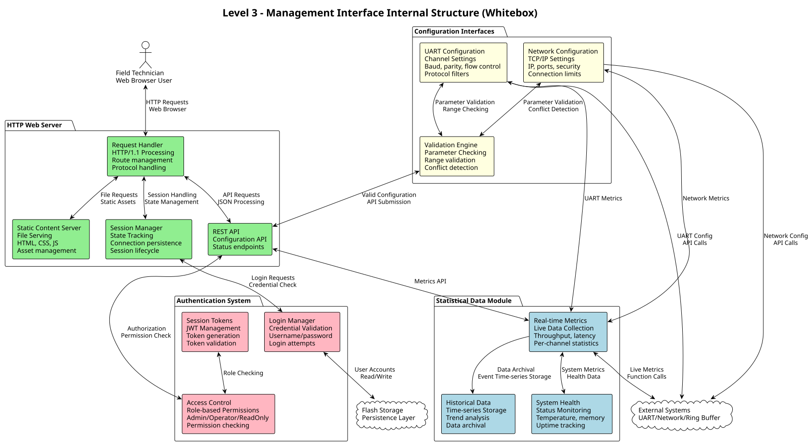
Purpose
Provides comprehensive web-based configuration, monitoring, and administration interface with modular components for different management aspects.
Internal Structure
HTTP Web Server Components
Request Handler
typedef struct {
uint16_t port; // Default: 80
uint32_t max_connections; // Concurrent sessions
char document_root[256]; // Static content path
} webserver_config_t;
int webserver_start(webserver_config_t* config);
int webserver_register_endpoint(const char* path, http_handler_t handler);
int webserver_send_response(int client_fd, http_response_t* response);Authentication System Components
User Management
typedef enum {
AUTH_ROLE_ADMIN, // Full configuration access
AUTH_ROLE_OPERATOR, // Monitor + basic config
AUTH_ROLE_READONLY // Monitor only
} auth_role_t;
typedef struct {
char username[32];
char password_hash[64]; // SHA-256 hash
auth_role_t role;
bool enabled;
} user_account_t;
bool authenticate_user(const char* username, const char* password);
const char* create_session_token(const char* username);
bool validate_session_token(const char* token);Statistical Data Components
System Statistics Structure
typedef struct {
// Per-channel statistics
struct {
uint64_t bytes_transmitted;
uint64_t bytes_received;
uint32_t messages_transmitted;
uint32_t messages_received;
uint32_t error_count;
uint32_t overflow_count;
float average_latency_ms;
uint32_t current_baud_rate;
} uart_stats[4];
// Network statistics
uint64_t tcp_bytes_sent;
uint64_t tcp_bytes_received;
uint32_t tcp_connections_active;
uint32_t tcp_connections_total;
// System statistics
uint32_t uptime_seconds;
uint32_t cpu_usage_percent;
uint32_t memory_used_bytes;
uint32_t ring_buffer_utilization_percent;
} system_statistics_t;Configuration Interface Components
UART Configuration Structure
typedef struct {
bool enabled;
uart_config_t config; // From UART Hardware Manager
char description[64]; // User-friendly name
bool protocol_filter_enabled;
char protocol_filter_type[32]; // "SharkNet", "custom", etc.
} uart_channel_settings_t;Network Configuration Structure
typedef struct {
// Network configuration
bool use_dhcp;
char ip_address[16]; // "192.168.1.100"
char subnet_mask[16]; // "255.255.255.0"
char gateway[16]; // "192.168.1.1"
char dns_primary[16];
char dns_secondary[16];
// Port mapping
struct {
uint16_t tcp_port; // 4001-4004 default
bool enabled;
uint32_t connection_timeout_ms;
char allowed_clients[256]; // IP ranges: "192.168.1.0/24"
} port_config[4];
// Security
bool enable_firewall;
char hostname[64];
uint16_t management_port; // Web UI port (default 80)
} network_config_t;Whitebox Global State Machine
The Global State Machine implements three independent event-driven state machines with atomic main state and ISR-safe sub-states. Each state machine follows the strict pattern current_state + event + check_condition() → new_state with no direct state manipulation allowed. This architecture provides predictable system coordination without persisting state information.
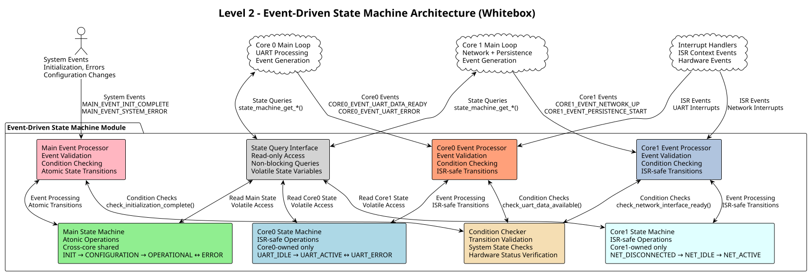
Motivation
The event-driven architecture prevents invalid state transitions by eliminating direct state manipulation. Three independent state machines provide lock-free operation with atomic main state coordination and ISR-safe sub-state management. This design ensures predictable system behavior through validated state transitions while maintaining high performance for real-time operations.
Contained Building Blocks
| Name | Responsibility |
|---|---|
Main State Machine |
Implements atomic event-driven state machine for system-wide coordination. Handles INIT → CONFIGURATION → OPERATIONAL ↔ ERROR transitions through atomic compare-and-swap operations. Thread-safe for cross-core access. |
Core0 State Machine |
Implements ISR-safe event-driven state machine for UART processing. Manages UART_IDLE → UART_ACTIVE ↔ UART_ERROR transitions. Owned exclusively by Core0, no cross-core locking required. |
Core1 State Machine |
Implements ISR-safe event-driven state machine for network and maintenance operations. Manages NET_DISCONNECTED → NET_IDLE → NET_ACTIVE, PERSISTENCE_ACTIVE, and LOG_ACTIVE transitions. Owned exclusively by Core1. |
Main Event Processor |
Processes system-wide events for main state transitions. Implements |
Core0 Event Processor |
Processes Core0-specific events for UART sub-state transitions. Implements |
Core1 Event Processor |
Processes Core1-specific events for network and maintenance sub-state transitions. Implements |
State Query Interface |
Provides non-blocking read-only access to current state information. Returns volatile state variables for main loops to make control flow decisions. Never blocks operations. |
Condition Checker |
Implements validation functions for state transition conditions. Checks system state, hardware status, and configuration validity before allowing transitions. Prevents invalid state changes. |
Important Interfaces
Main State Definitions
typedef enum {
MAIN_STATE_INIT = 0, // System initialization and hardware setup
MAIN_STATE_CONFIGURATION = 1, // Configuration loading and validation
MAIN_STATE_OPERATIONAL = 2, // Normal operation mode
MAIN_STATE_ERROR = 3 // Error state requiring recovery
} main_state_t;Core Sub-State Definitions
typedef enum {
CORE0_UART_IDLE = 0, // No active UART operations
CORE0_UART_ACTIVE = 1, // Processing UART data
CORE0_UART_ERROR = 2 // UART hardware error state
} core0_substate_t;
typedef enum {
CORE1_NET_DISCONNECTED = 0, // Network interface down
CORE1_NET_IDLE = 1, // Network interface up, no connections
CORE1_NET_ACTIVE = 2, // Active network connections
CORE1_PERSISTENCE_ACTIVE = 3, // Flash persistence operation active
CORE1_LOG_ACTIVE = 4 // Log processing active
} core1_substate_t;Event-Driven State Machine API
// State initialization
bool state_machine_init(void);
// State query functions (non-blocking, read-only)
main_state_t state_machine_get_main_state(void);
core0_substate_t state_machine_get_core0_substate(void);
core1_substate_t state_machine_get_core1_substate(void);
// Event processing functions (ONLY way to change states)
bool state_machine_process_main_event(main_state_event_t event);
bool state_machine_process_core0_event(core0_event_t event);
bool state_machine_process_core1_event(core1_event_t event);
// Event type definitions
typedef enum {
MAIN_EVENT_INIT_COMPLETE, // Initialization finished successfully
MAIN_EVENT_CONFIG_LOADED, // Configuration loaded and validated
MAIN_EVENT_SYSTEM_ERROR, // System error detected
MAIN_EVENT_ERROR_RECOVERED // Recovery from error state complete
} main_state_event_t;
typedef enum {
CORE0_EVENT_UART_DATA_READY, // UART data available for processing
CORE0_EVENT_UART_IDLE, // UART processing completed
CORE0_EVENT_UART_ERROR, // UART hardware error detected
CORE0_EVENT_ERROR_RECOVERED // UART error recovery complete
} core0_event_t;
typedef enum {
CORE1_EVENT_NETWORK_UP, // Network interface connected
CORE1_EVENT_NETWORK_DOWN, // Network interface disconnected
CORE1_EVENT_CONNECTION_ACTIVE, // TCP connection established
CORE1_EVENT_CONNECTION_IDLE, // All connections closed
CORE1_EVENT_PERSISTENCE_START, // Flash operation starting
CORE1_EVENT_PERSISTENCE_END, // Flash operation completed
CORE1_EVENT_LOG_START, // Log processing starting
CORE1_EVENT_LOG_END // Log processing completed
} core1_event_t;Event-Driven Core Main Loop Integration
// Core0 event-driven main loop structure
void core0_main(void) {
while (true) {
main_state_t main_state = state_machine_get_main_state();
core0_substate_t sub_state = state_machine_get_core0_substate();
// State-driven control logic with event generation
switch (main_state) {
case MAIN_STATE_INIT:
if (initialize_uart_hardware()) {
// Send event to transition main state
state_machine_process_main_event(MAIN_EVENT_INIT_COMPLETE);
}
break;
case MAIN_STATE_OPERATIONAL:
switch (sub_state) {
case CORE0_UART_IDLE:
if (uart_data_available()) {
// Generate event to start UART processing
state_machine_process_core0_event(CORE0_EVENT_UART_DATA_READY);
}
break;
case CORE0_UART_ACTIVE:
if (process_uart_data()) {
// Processing complete, generate idle event
state_machine_process_core0_event(CORE0_EVENT_UART_IDLE);
}
break;
case CORE0_UART_ERROR:
if (attempt_uart_recovery()) {
// Recovery successful, generate recovery event
state_machine_process_core0_event(CORE0_EVENT_ERROR_RECOVERED);
}
break;
}
break;
case MAIN_STATE_ERROR:
// Attempt system recovery
if (perform_error_recovery()) {
state_machine_process_main_event(MAIN_EVENT_ERROR_RECOVERED);
}
break;
}
sleep_ms(10);
}
}
// Core1 main loop with log processing requirement
void core1_main(void) {
while (true) {
// High priority: Network processing
process_network_operations();
// Medium priority: Persistence operations
if (persistence_needed()) {
state_machine_process_core1_event(CORE1_EVENT_PERSISTENCE_START);
flash_persistence_save_configuration_if_needed();
state_machine_process_core1_event(CORE1_EVENT_PERSISTENCE_END);
}
// Low priority: Process ONE log event per iteration
if (log_events_pending()) {
state_machine_process_core1_event(CORE1_EVENT_LOG_START);
log_manager_format_one_pending_event(); // Process exactly one event
state_machine_process_core1_event(CORE1_EVENT_LOG_END);
}
sleep_ms(100); // 100ms loop frequency
}
}Event Processing Implementation Pattern
// Example: Core0 event processing with condition checking
bool state_machine_process_core0_event(core0_event_t event) {
core0_substate_t current_state = state_machine_get_core0_substate();
core0_substate_t new_state = current_state; // Default: no change
// State + Event + Condition → New State
switch (current_state) {
case CORE0_UART_IDLE:
if (event == CORE0_EVENT_UART_DATA_READY) {
if (check_uart_data_available() && check_main_state_operational()) {
new_state = CORE0_UART_ACTIVE;
}
}
break;
case CORE0_UART_ACTIVE:
switch (event) {
case CORE0_EVENT_UART_IDLE:
if (check_uart_processing_complete()) {
new_state = CORE0_UART_IDLE;
}
break;
case CORE0_EVENT_UART_ERROR:
new_state = CORE0_UART_ERROR;
break;
}
break;
case CORE0_UART_ERROR:
if (event == CORE0_EVENT_ERROR_RECOVERED) {
if (check_uart_hardware_recovered()) {
new_state = CORE0_UART_IDLE;
}
}
break;
}
// Apply state change if needed (ISR-safe atomic operation)
if (new_state != current_state) {
return atomic_compare_exchange_strong(&g_core0_substate, ¤t_state, new_state);
}
return true; // No change needed
}Memory Layout and Synchronization
-
Non-Persistent: State variables are NOT stored in shared_memory_layout_t
-
Atomic Variables: Main state uses atomic types for cross-core coordination
-
Volatile Variables: Sub-state variables marked volatile for ISR visibility
-
ISR-Safe Operations: Sub-state transitions safe for interrupt context
-
Lock-Free Design: Each core owns its sub-state, no cross-core locking
-
Memory Barriers: Proper barriers ensure cache coherency between cores
-
Separate Memory Region: State machine uses dedicated memory region outside persistent storage
Feedback
Was this page helpful?
Glad to hear it! Please tell us how we can improve.
Sorry to hear that. Please tell us how we can improve.